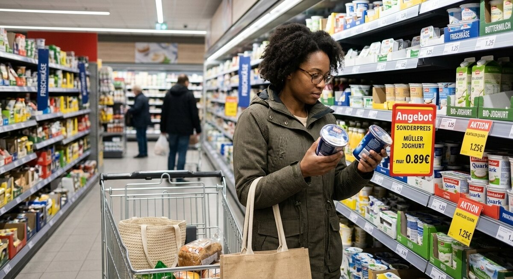

Teil 2 · Bild und Erfahrung
Karte 020
Angebote im Supermarkt vergleichen
Ausführliches Übungsmaterial zur Vorder- und Rückseite der Karte.

Ihre Aufgabe
- was Sie auf dem Bild sehen
- wo die Situation stattfindet
- was die Personen gerade machen
- worauf Menschen beim Einkaufen achten
- ob Sie selbst eher günstig oder spontan einkaufen
Interaktives Sprechtraining
Mit ChatGPT sprechen üben
Kopiere zuerst die Übungsanweisung. Öffne anschließend die ChatGPT-App oder ChatGPT im Browser, starte den Sprachmodus (Voice Mode) und füge den Prompt in diesen Chat ein.
- Tippe auf „Prompt kopieren“.
- Öffne anschließend die ChatGPT-App oder nutze den Browser-Link.
- Melde dich bei Bedarf an und starte in ChatGPT zuerst den Sprachmodus (Voice Mode).
- Füge den bereits kopierten Prompt in den Chat des Sprachmodus (Voice Mode) ein und sende ihn ab.
- Beginne anschließend die Sprechübung.
- Wenn du die Übung beenden und Feedback bekommen möchtest, sage:
Die Übung ist beendet. Bitte gib mir jetzt Feedback.
Prompt anzeigen oder manuell kopieren
ChatGPT ist ein externer Dienst. Für den Sprachmodus (Voice Mode) musst du dich möglicherweise bei deinem ChatGPT-Konto anmelden und den Zugriff auf das Mikrofon erlauben. Verfügbare Funktionen hängen von deinem Gerät und Konto ab. Die Übung ersetzt keine offizielle Prüfungsbewertung.
Nützliche Satzanfänge
- Auf dem Bild sehe ich …
- Die Situation ist wahrscheinlich in …
- Die Person schaut gerade auf …
- Beim Einkaufen ist wichtig, dass …
- Ich persönlich achte meistens auf …
Modellantwort anhören
Höre zuerst aufmerksam zu. Sprich danach nicht einfach alles nach, sondern bearbeite die Aufgabe mit eigenen Informationen.
Modellantwort
Auf dem Bild sehe ich wahrscheinlich einen Supermarkt. Eine Frau oder ein Mann steht vor einem Regal und vergleicht Produkte oder Preise. Vielleicht gibt es auch einen Einkaufswagen und gelbe Schilder mit Angeboten. Ich denke, die Person möchte nicht einfach irgendetwas kaufen, sondern schaut genau, was günstiger oder besser ist. Solche Situationen kennt fast jeder aus dem Alltag.
Beim Einkaufen achten viele Menschen auf Preis, Qualität und natürlich auch darauf, was sie wirklich brauchen. Im Moment vergleichen besonders viele Leute die Preise, weil Lebensmittel teurer geworden sind. Ich selbst kaufe meistens mit einer kleinen Liste ein, damit ich nicht zu viel ausgebe. Manchmal kaufe ich trotzdem spontan etwas, vor allem wenn es ein gutes Angebot gibt. Insgesamt finde ich, dass Planen beim Einkaufen hilft, ruhiger zu bleiben und Geld zu sparen.
Mögliche Prüferfragen und Antwortideen
-
Schreiben Sie oft eine Einkaufsliste?
Antwortidee: Ja, meistens schreibe ich vorher eine kurze Liste.
-
Was kaufen Sie lieber im Angebot?
Antwortidee: Vor allem Grundprodukte wie Nudeln, Reis oder Waschmittel.
-
Ist Einkaufen in Deutschland teuer?
Antwortidee: Manche Dinge schon, deshalb vergleiche ich öfter die Preise.
-
Bezahlen Sie lieber bar oder mit Karte?
Antwortidee: Meistens mit Karte, aber kleine Beträge zahle ich auch bar.
Wortschatz
| Deutsch | Englisch |
|---|---|
| das Angebot | special offer |
| vergleichen | to compare |
| das Regal | shelf |
| günstig | affordable |
| spontan | spontaneous |
| der Einkaufswagen | shopping cart |
| die Einkaufsliste | shopping list |
| sparen | to save |
Schnelltraining
Beschreiben Sie das Bild in drei Sätzen. Danach ergänzen Sie einen Satz mit „Wenn etwas im Angebot ist, …“.